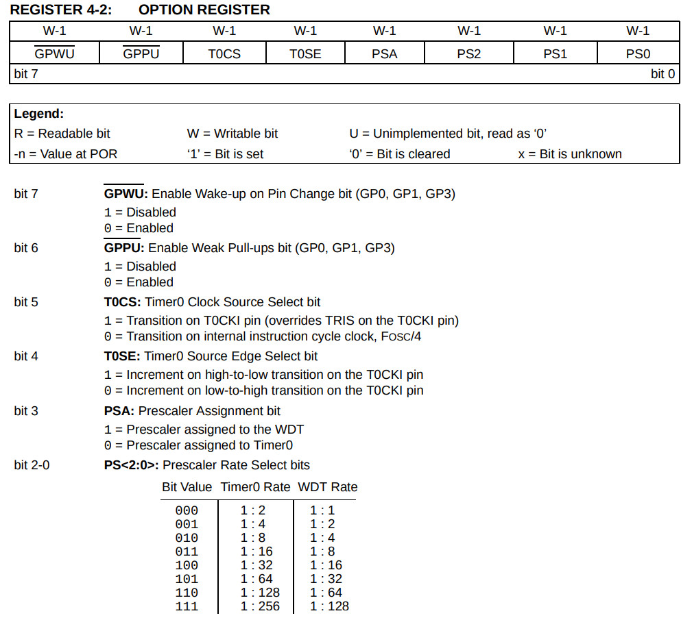
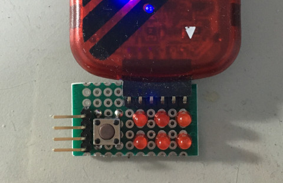
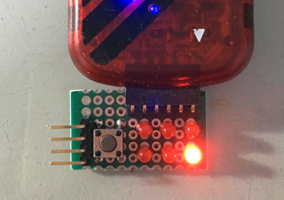

Prescaler
相較於一般Watchdog對於Sleep的處理方式，PIC10F200是直接Reset Device，而非從Sleep喚醒並且繼續往下執行，因此，在STATUS暫存器有一個旗標用來標示是否Watchdog Reset，如下：
Prescaler

list p=10f200, r=hex
#include <p10f200.inc>
__config _CONFIG, _IntRC_OSC & _WDTE_ON & _MCLRE_OFF
org 0x00
start:
movlw b'11001111'
option
movlw b'00001100'
tris GPIO
bcf GPIO, 1
movlw 0x01
xorwf GPIO, f
sleep
goto $
end
編譯
$ gpasm main.s
完成

